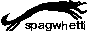

Buttons
Here is a button wall, I try to add everyone that follows me on nekoweb if I can find a button on their site.


![eepynoelle.nekoweb.org button]()



If you want to add my button to your site use this code:
<a href="https://spaghetti.nekoweb.org" target="_blank"><img src="https://spaghetti.nekoweb.org/button.png"></a>